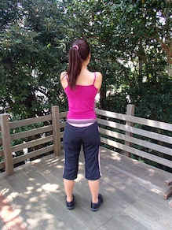
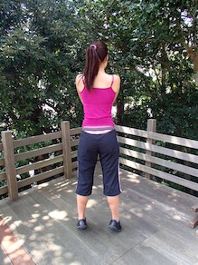
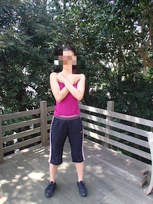
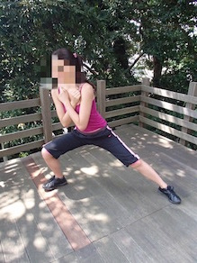
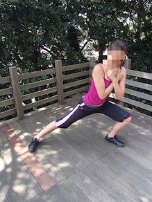
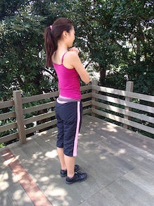
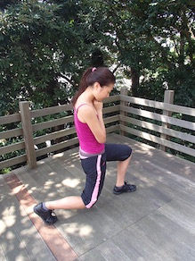

触りたくなるような足首を手に入れる！

1. 腕はクロスし、手を胸に当てて、脚を肩幅と同じ広さに広げる。

2. 1の状態でかかとを浮かせ、床に付ける。
サイドランジ

1. 両手を顎のあたりで組、脇を占めた状態で立つ。

2. ①の状態から右足を大きく１歩横に踏み出し、右足に体重をかけ膝を深く曲げる。膝を使って右足をもとの位置に戻す。

3. 2の動きを１０秒以上は続けてみる。
リバース・ラウンジ スリムな太ももへ

1. まっすぐ立ち、両脇を締めて胸元で両手を組み合わせる。

2. 右足を大きく1歩後ろへ下げ、膝をまげて、床ギリギリの位置まで膝を下げる。このとき、左ひざは９０度の角度にする。
3. 後ろへ移動した右足をもとに戻し、左足も同様に行う。